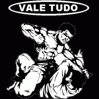

|
|

Ва́ле-ту́до (порт. vale-tudo[1], МФА [ˈvali ˈtudu] — рус. «всё дозволено») — полноконтактное безоружное боевое соревнование с ограниченным количеством правил, которое стало популярно в Бразилии в двадцатом веке. Несмотря на то, что участники используют различные боевые стили, некоторые считают вале-тудо самостоятельным боевым искусством[2].
Тем не менее данный цирковой термин не был популярным вплоть до 1959—1960 годов, когда он стал использоваться для описания боёв между бойцами разных стилей, которые были показаны в вечернем телешоу Heróis do Ringue («Герои ринга»). Создателями и хозяевами телешоу были члены семьи Грейси, а все бойцы законно практиковали свои стили. Во время одного из шоу Жуан Алберту Баррету, позднее ставший рефери на UFC 1, встретился с противником, использовавшим свободный стиль. Баррету провёл захват руки, но противник не захотел сдаваться, и Баррету сломал ему руку. Как следствие, это шоу было заменено другим, под названием Telecatch («Телезахват»), на котором были представлены куда более театрализованные бои. Среди героев «Телезахвата» были итальянский борец Тед Бой Марино и многие другие[4]
С 1960-х вале-тудо оставалось закрытой субкультурой, где большинство боев проходило в отдельных додзё или гимнастических залах. Субкультура вале-тудо базировалась в основном в Рио-де-Жанейро, но некоторые бои имели место как в северных регионах, так и в южных, например штат Баия, где была очень распространена капоэйра. В Рио-де Жанейро основные соревнования происходили между бразильским джиу-джитсу и вольной борьбой, в то время как в других регионах состязания включали борьбу между большим количеством стилей.
Рорион Грейси из известной семьи Грейси эмигрировал в США и в 1993 году представил вале-тудо новой публике в виде UFC. Большая популярность UFC вызвала интерес к вале-тудо во всех странах мира, особенно в Японии, а в Бразилии оно вновь стало обретать былую популярность. В 1990 году были организованы чемпионаты мира по вале-тудо World Vale Tudo Championship (WVC) и International Vale Tudo Championship (IVC). Оба они были показаны на бразильском телевидении и на платных каналах.[источник не указан 3917 дней]
Чемпионаты были организованы за счёт финансового капитала спонсоров из Сан-Паулу, и благодаря им начались карьеры многих нынешних чемпионов MMA. Тем не менее, после того как штат Сан-Паулу запретил вале-тудо как чрезвычайно травмоопасный спорт, оба чемпионата были забыты и не возобновлялись до 2002 года. Вале-тудо было заменено на менее опасные версии MMA и вернулось на подпольное положение в Бразилии. Бои по вале-тудо до сих пор проводятся в Бразилии, а споры о кровавой направленности вале-тудо также не утихают .Вале-тудо можно поделить на две группы: одна изучает партер бразильское джиу-джитсу, дзюдо , а другая стили в стойке бокс, кикбоксинг, кёкусинкай.[источник не указан 3917 дней]
Основной вопрос дискуссий — следует ли вале-тудо принять более безопасные правила, разработанные в ММА и принятые в США.[источник не указан 3917 дней] Защитники вале-тудо говорят, что правила ММА были разработаны в США и несовместимы с настоящим вале-тудо и что к вале-тудо надо относиться как отдельному виду спорта. В вале-тудо используются техники из многих стилей, таких как бразильское джиу-джитсу, муай тай, самбо, дзюдо, бокс и борьба.
|